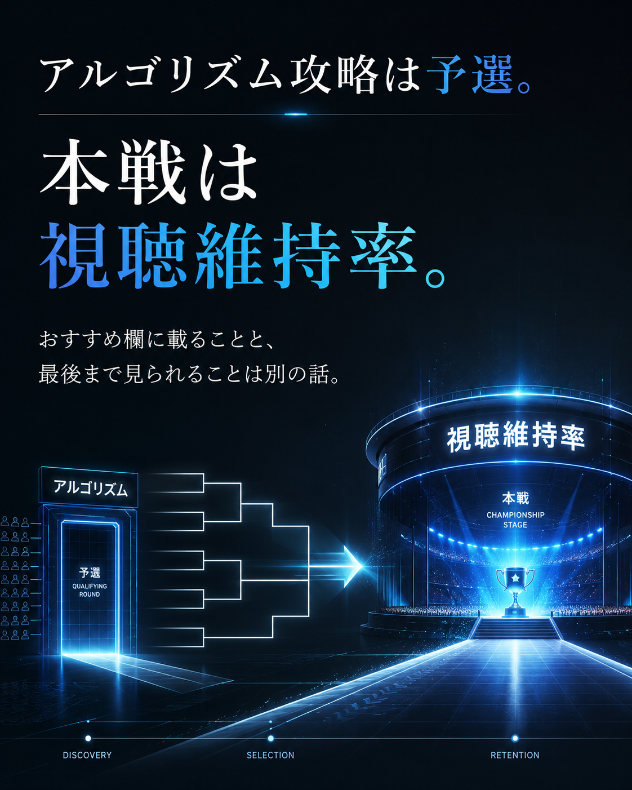
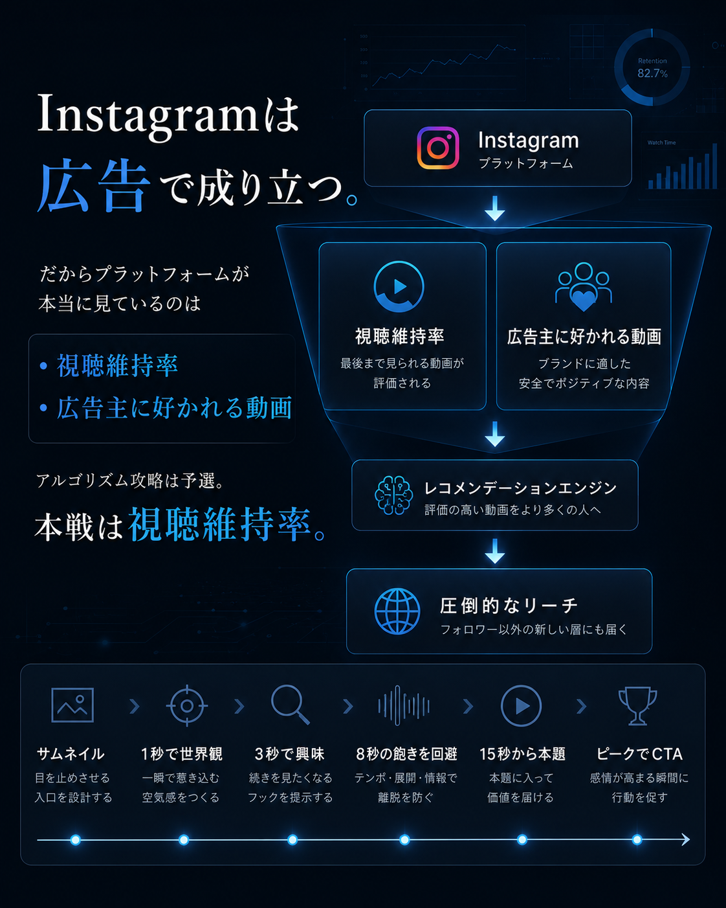
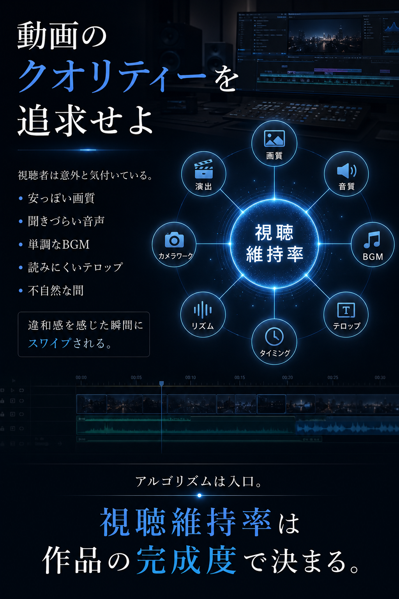
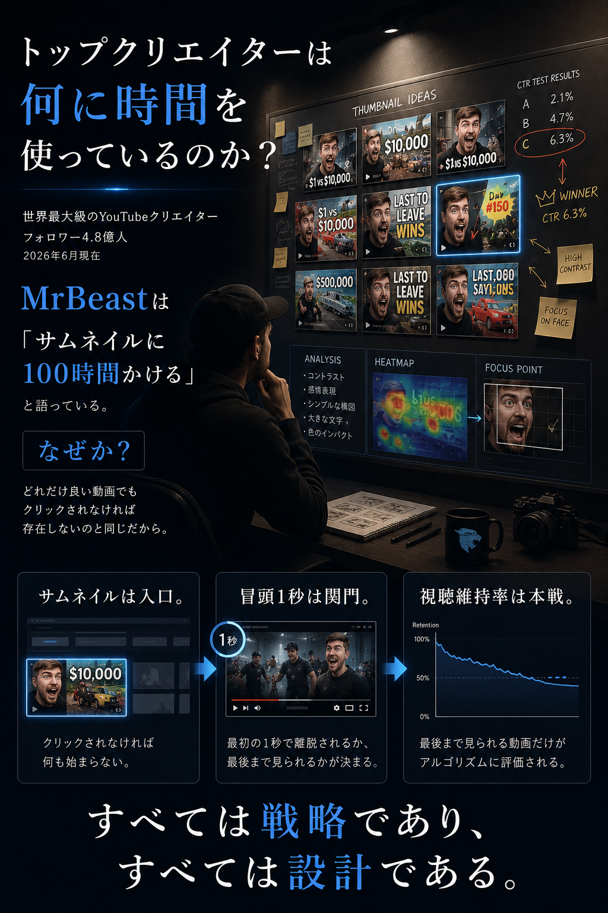

Section 01

Layer07 Retention Design
冒頭、音、視覚変化、感情導線、CTAまで。動画設計の抜け漏れを、画像教材と完成版チェックリストで一気に見直せる1ページです。
Section 01

Section 02

Section 03

Section 04

刺激を足すだけでなく、注意の維持、信頼、感情の流れまで確認して、最後まで見たくなる構成へ整えます。